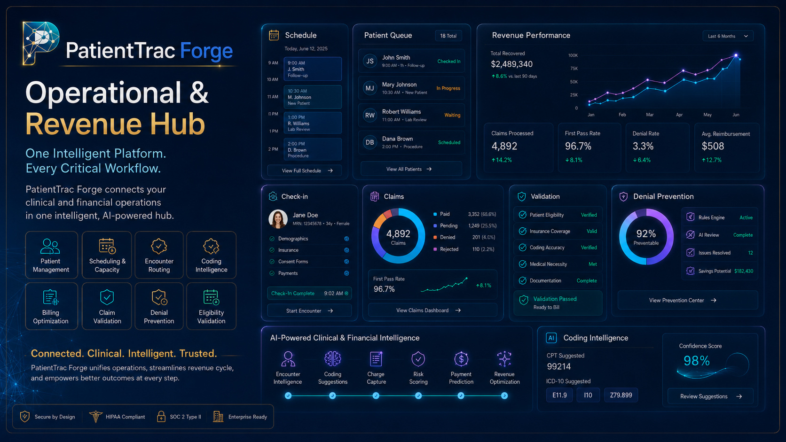
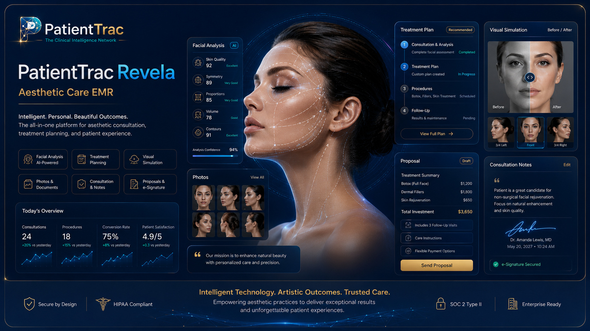
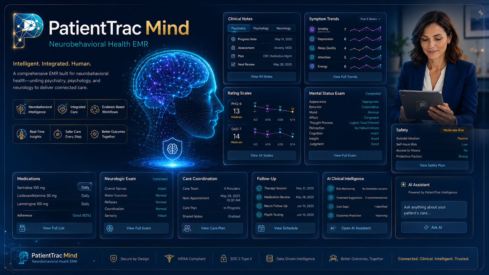
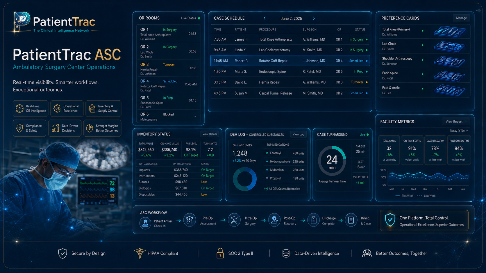
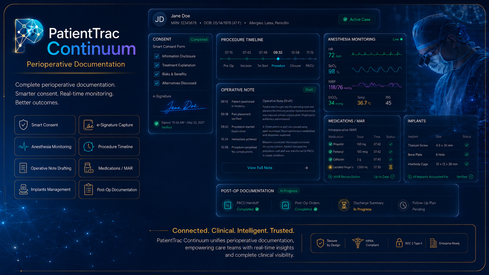
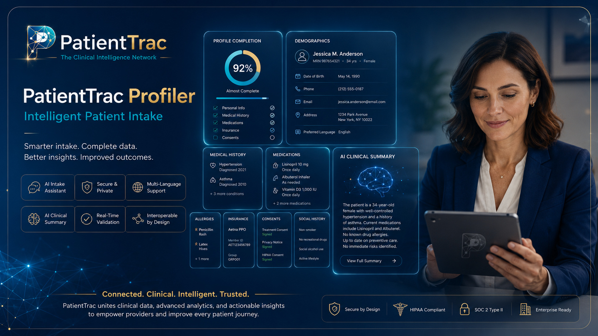
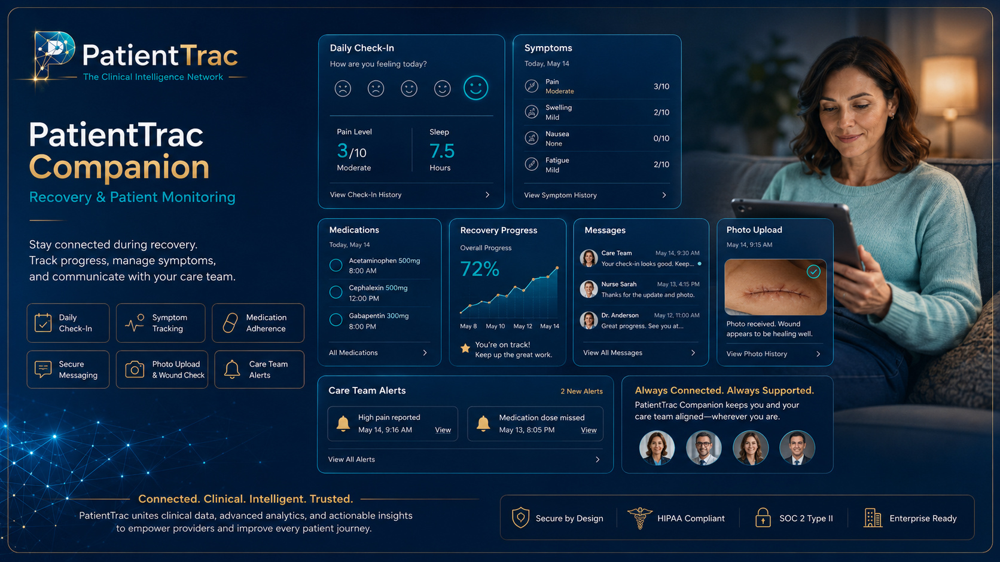
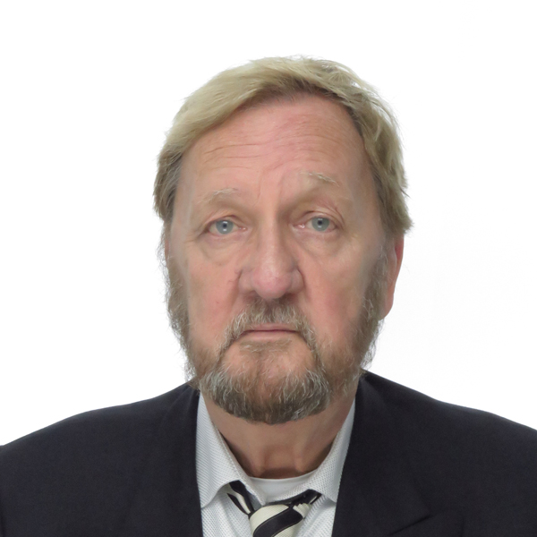

PatientTrac builds a unified ecosystem of AI-powered clinical software — scheduling, specialty EMRs, ambulatory surgery, patient intake, and post-visit monitoring — all sharing one secure clinical data layer and one universal encounter key.
PatientTrac Corp was founded in 2001 to solve a problem most software still ignores: clinical work does not live in one screen. A patient is scheduled, examined, operated on, billed, and followed up — across specialties, sites, and systems that rarely speak to each other.
We answered with a single clinical data repository and a suite of focused applications that sit on top of it. Each app is purpose-built for its specialty, yet every one reads and writes the same patient and encounter records, governed by row-level security and a tamper-evident HIPAA audit layer.
"We never set out to build one product. We set out to build the spine that every clinical product could share."
Today that spine carries seven live platforms and the AI that runs through all of them — modernized from a legacy clinical system into a connected, cloud-native network.
PatientTrac Corp begins as a specialty clinical documentation system built on a relational clinical model.
Plastic, reconstructive and behavioral health modules mature, validated alongside an international clinical advisory team.
The unified clinical repository and the shared encounter key are formalized — one record, many applications.
The legacy platform is modernized to a multi-tenant, RLS-isolated architecture with serverless clinical intelligence.
No-show prediction, smart scheduling, AI intake, denial-risk and coding assistance go live across the platform.
Seven platforms live — from the operating room to post-visit self-management — under one trilingual experience.
Every intelligent feature reads from the same clinical record and writes back to it. No bolt-on chatbots — the AI is wired into scheduling, intake, the encounter, and the revenue cycle, with the model key held server-side only.
Scores each booking 1–10 on real risk factors, surfaces alerts on the calendar, and queues extra reminders before the patient ever misses.
Reads a provider's 14-day schedule and proposes optimal slots — checking conflicts, risk patterns, and insurance visit intervals.
A pre-visit conversation collects history and symptoms, flags red flags by urgency, and pre-fills the encounter for the provider.
After the encounter closes, suggested CPT/ICD codes and a denial-risk score reach the biller — never the clinician, by design.
Each application is built for its specialty and shares the same patient, encounter and security layer. A patient scheduled in Forge flows seamlessly into Revela, Mind, ASC, and beyond — without ever re-keying a record.

LiveThe operational foundation of the PatientTrac network. Patient registration, demographics, insurance, scheduling, check-in and encounter creation — the source of the encounter_id every other app consumes.

LivePremium documentation for aesthetic and cosmetic care — operative notes, breast and body exams, post-op planning — integration-ready with Nextech, ModMed or Aesthetic Record.

LiveOne record across psychiatry, psychology, and neurology — initial evaluations, medication management, follow-up and inpatient visits — with DSM-5 reference data built in and clinical notes kept clear of billing prompts.

LiveReal-time visibility across cases, rooms, supplies, and revenue — equipment catalog, AAMI ST79 sterile-processing workflow, medication and DEA logging, preference cards and a live case console.

LiveOne record for the entire procedural episode — every specialty, pre-op to recovery. Structured capture that ties back to the encounter and feeds the operative and billing trail downstream.

LiveThe patient's front door before the visit. A trilingual, eight-step intake with nine specialty branches and an AI conversational mode — collecting history so the provider opens a pre-filled encounter.

LiveCare continues after the visit. Patients track recovery, medications and symptoms; the care team monitors progress and is alerted when something needs attention — closing the loop that Profiler opens.
Clinical documentation flows straight into a real revenue-cycle engine: standards-based claims, pluggable multi-region gateways, electronic remittance, AI denial-risk scoring, and accounts-receivable visibility end to end.
Closing an encounter generates the superbill from appointment-type CPT mapping — coding never enters the clinical note.
837PProfessional claims are built to the 837P standard, validated, and scrubbed before they ever leave the building.
A multi-region clearinghouse layer routes claims through the right gateway per payer and geography.
ERA/835Electronic remittance posts back automatically, reconciling payments against the original claim lines.
Open balances, aging and denials surface for the billing team with the work prioritized by value and risk.
Each claim is scored 1–10 for denial likelihood with specific risk factors, so the highest-risk claims get human review first.
Built on the X12 transaction set the industry runs on — professional claims out, electronic remittance back.
Coverage checks and reimbursement estimates run against the patient's insurance before the visit, reducing surprise balances.
Billing intelligence is visible only to billing staff in a dedicated validator — never surfaced inside clinical documentation.
Profiler and Companion bookend the encounter into one continuous loop — intake feeds the visit, the visit feeds self-management, and the care team watches the whole arc.
The patient completes a trilingual, specialty-aware intake — history, medications, symptoms — and AI triage flags anything urgent. The provider opens a pre-filled encounter.
Forge, Revela, Mind, ASC and Continuum document the visit on the shared spine — one encounter, the right specialty surface, no re-keying.
The patient tracks recovery and adherence at home; the care team monitors progress and is alerted when intervention is needed — then the loop begins again.
The seven live platforms are only the beginning. Select the specialties you'd want next and join the waitlist — early practices help shape what we build.
Interventional pain workflows, controlled-substance tracking and outcome scoring.
Lesion mapping, biopsy tracking and procedure documentation for the skin clinic.
Cardiac history, diagnostics and longitudinal monitoring on the shared spine.
Admission-to-discharge inpatient flows and acute trauma documentation.
Tell us about your practice and which specialties you're watching.

Wayne Hayes Jr. founded PatientTrac Corp in 2001 and has been its principal architect ever since — designing the clinical data model, building the applications, and steering the platform from a legacy system into the connected, AI-driven network it is today.
His conviction is simple: clinical software should adapt to how medicine is actually practiced — across specialties and settings — rather than forcing every discipline into one generic screen. That belief is the reason PatientTrac is a suite of focused applications on a single shared spine, not a monolith.
PatientTrac's clinical logic and database architecture were shaped alongside a multidisciplinary, international clinical team — surgeons, psychiatrists, trauma and emergency specialists, and plastic and reconstructive surgeons — ensuring each specialty module reflects real practice, not assumptions.
"The encounter follows the patient from scheduling into the operating room without a single duplicate record."
"Intake is done before the patient sits down, in their own language, and the chart is already started."
"Denial risk is scored before the claim goes out, so the team works the riskiest claims first."
"Recovery doesn't end at the door — Companion keeps the care team watching after the visit."
Whether you're modernizing one specialty or connecting an entire group, we'll map PatientTrac to how you actually work.